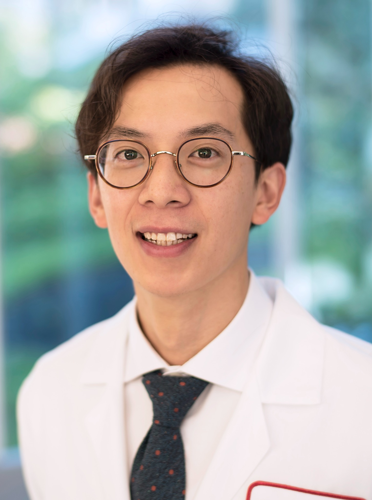

01 / DECISION SCIENCE
Choosing treatment
Understanding who may benefit from surgery and how to weigh cancer control, function, and treatment burden.
Prediction · Bayesian inference · Decision analysis
We bring surgical oncology, artificial intelligence, and industrial engineering together to tackle the decisions that shape a patient’s care.
Explore our researchOur work starts with problems encountered in head and neck cancer care, then connects clinical insight with methods from engineering and data science.
Understanding who may benefit from surgery and how to weigh cancer control, function, and treatment burden.
Studying referral pathways, wait times, and surgical prioritization to help patients reach the right care sooner.
Combining wearable signals, patient-reported outcomes, and imaging to understand treatment response and recovery.
A selection of projects spanning care delivery, clinical decision support, and life before and after treatment.
Modelling head and neck cancer referral pathways to understand where delays arise and how scheduling and prioritization can improve access.
Using smartwatch data around major head and neck surgery to characterize changes in activity and patterns of postoperative recovery.
Organizing heterogeneous lung donor records into structured information and studying how AI can support procurement decisions.
Investigating whether patient-reported symptoms and quality-of-life measures can help identify risk of cancer recurrence after treatment.
Exploring MRI radiomics and tumour segmentation to extract clinically useful information for treatment planning and response assessment.

Lab lead
Head & Neck Surgical Oncologist
Microvascular Reconstructive Surgeon
Christopher is a head and neck surgical oncologist and microvascular reconstructive surgeon at Princess Margaret Cancer Centre, University Health Network, and a faculty member in the Department of Otolaryngology–Head & Neck Surgery at the University of Toronto.
His research connects clinical care with artificial intelligence, decision analytics, and health systems engineering. Alongside his surgical practice, he is pursuing a PhD in Industrial Engineering at the University of Toronto.
Research interests: surgical decision-making, access to cancer care, predictive modelling, digital health, and patient recovery.
Our questions sit across medicine, engineering, and computer science. We welcome conversations with students, clinicians, and researchers interested in improving cancer care through data and decision science.
Princess Margaret Cancer CentrePotential research areas include care pathway simulation, clinical machine learning, wearable data analysis, and imaging. A useful introduction includes your background, research interests, and the clinical question you would like to explore.
We are interested in connecting clinical questions with expertise in optimization, statistics, AI, digital health, and outcomes research.
Princess Margaret Cancer Centre
University Health Network
Toronto, Ontario, Canada
Department of Otolaryngology–Head & Neck Surgery
University of Toronto